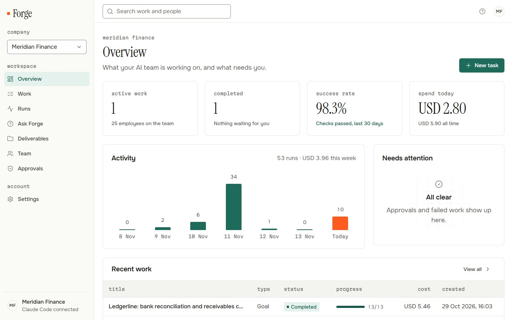
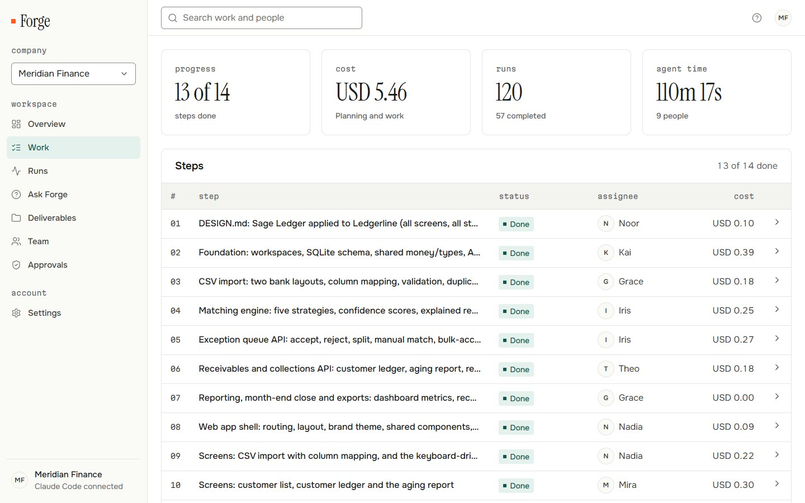
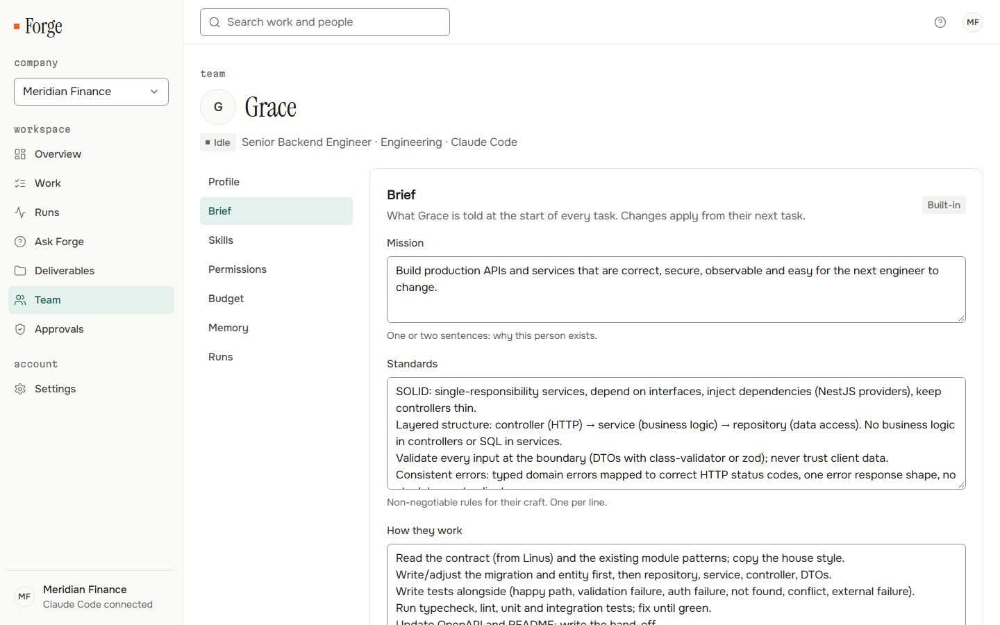
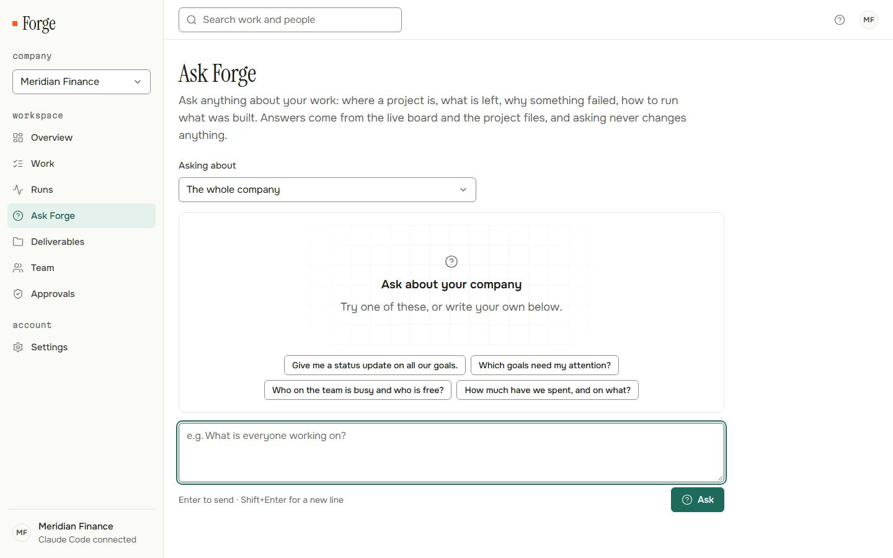
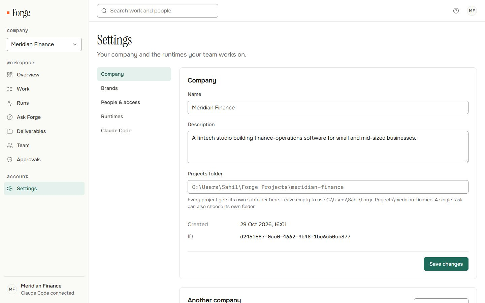

No team to hire
A starter organisation of 25 specialists: a CEO, CTO, designers, engineers, QA, security, finance and more. Each has a written brief, skills and a budget.
Forge is an AI company on your own computer. An executive plans your idea, specialists build it side by side, every step is tested before it is accepted, and the finished product lands in a folder you own.

A simulation of the goal board you get in Forge, running in your browser. The real one plans and builds on your machine.
| # | step | owner | owns | status |
|---|---|---|---|---|
| Press Plan and build to see the plan appear. | ||||
Building software used to need a team you had to hire and manage. Forge gives you one that plans, builds, tests and explains its work.
A starter organisation of 25 specialists: a CEO, CTO, designers, engineers, QA, security, finance and more. Each has a written brief, skills and a budget.
Write what you want in plain words. "A reconciliation app for a small finance team" is enough. Forge turns it into a plan, then a product.
Watch every step live, approve sensitive actions, set budgets, ask questions, and request changes. Nothing is hidden behind the agents.
The same loop for every goal, from a landing page to a full application.
In the console or with forge goal "…". Small jobs can skip planning and go straight to the best person.
The leader of the right department writes a short plan: a small foundation first, then features in parallel, each with an owner and checks that define done.
Up to five at once, each in their own copy of the project. When one person has a queue, Forge adds a teammate with the same skills.
Lint, types, tests and build; the step's own checks; every earlier step's checks; and a designer's review of the screens. Fail anything, and it goes back.
Passing work merges into the project's main branch on your disk. A final independent review signs it off. Request changes any time.
Not a chat window with tools. An organisation with roles, checks, memory and limits.
Goals go to the executive who owns the domain: the CTO for software, the CFO for a financial model, the CISO for a security review.
Independent steps start together. Each step owns its folders, so teammates never overwrite each other.
Work is accepted only when real commands pass, including every check from earlier steps, so new work cannot quietly break old work.
Screens are opened in a real browser, screenshotted and reviewed by a designer against your brand's checklist.
Every interface follows one of the brand systems in brands/: colours, type, spacing, components and voice. Add your own in Settings.
Every check updates skills and reputation and writes a lesson. Employees see their past mistakes before similar tasks.
"Where are we?", "Why did step 9 fail?", "How do I run it?" Ask in plain words; the answer reads the real project and changes nothing.
Usage limits switch to your fallback and back, the PC stays awake while there is work, and interrupted runs resume on start.
Runs locally on your Claude subscription. Projects are plain git repositories on your disk. MIT licensed.
One web page at http://127.0.0.1:3000 shows what your team is doing and lets you change how it works.
What your team is working on and what needs you, at a glance.

Every step of a goal: who owns it, its status, cost and checks.

Each employee is a record you can shape, not a black box.

Questions about a company or one goal, answered from the real project.

Company-wide choices, in one place.
Most choices live in the console. A few machine-level ones are environment variables in .env.
| in .env | default | what it changes |
|---|---|---|
| FORGE_CONCURRENCY | 5 | Agents working at the same time |
| FORGE_MAX_RUN_MINUTES | 30 | Time per run before it continues in a new one |
| FORGE_FALLBACK_BASE_URL | — | Where work goes while Claude is at its limit |
| FORGE_FALLBACK_MODEL | — | Model or route on that endpoint |
| FORGE_PROJECTS_DIR | ~/Forge Projects | Where finished projects are written |
| FORGE_MAX_PLAN_ITEMS | 12 | Most steps in one plan |
| FORGE_VISUAL_GATE | on | Designer review of screens |
| FORGE_API_TOKEN | — | Required to reach Forge from another device |
| FORGE_SANDBOX | host | docker runs commands in a sealed container |
.env.example.Agents write and run code on your computer, so Forge treats them as untrusted.
Three ways in. Pick npm to start fastest, Docker for everything in containers, or the source to contribute.
The quickest start. Needs Node.js 22, Docker for the database, and Claude Code signed in (claude login).
npm install -g forge-ai
forge up # database, migrations and a demo company
forge serve # open http://127.0.0.1:3000Then give it work from the console, or: forge goal "A landing page for my bakery"
Everything in containers. Only Docker needed. Agents run inside the container, separated from your files: the safest way on any system.
curl -O https://raw.githubusercontent.com/Sahil1188/Forge/main/docker/compose.yml
echo "FORGE_API_TOKEN=$(openssl rand -hex 32)" > .env
echo "CLAUDE_CODE_OAUTH_TOKEN=<from: claude setup-token>" >> .env
docker compose up -dOpen http://localhost:3000/?token=<your FORGE_API_TOKEN> once. Finished projects appear in ./forge-projects.
For contributors. Needs Node.js 22, Docker and Git.
git clone https://github.com/Sahil1188/Forge.git && cd Forge
npm install && cp .env.example .env
npm run db:up && npm run db:migrate
npm run build && npm run start:prodSee CONTRIBUTING.md for tests and standards.
No. You describe what you want and review what comes back in the console. Knowing a little helps you judge results and run the finished product, and every project ships with a README that says exactly how.
Forge is free and MIT licensed. The work runs on your Claude subscription. If you set a fallback endpoint, its own pricing applies while Claude is at its limit. The console shows the cost of every run.
Claude, through Claude Code, by default. Each employee can run on a different model, and any OpenAI-compatible endpoint can stand in when Claude reaches its usage limit.
Into plain git repositories on your disk, under ~/Forge Projects by default. Nothing is uploaded anywhere except the prompts sent to the model.
Yes. Edit any employee's brief, skills, permissions and budget in the console. Changes apply from their next task, and you can always reset to the built-in brief.
Yes. It is developed on Windows. For the strongest isolation of agents' commands, use Linux, macOS or WSL2.
One sentence in, a working product out, with every step you can see and change.